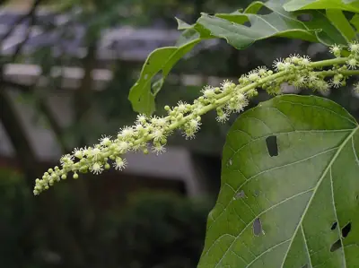

pranet · 出典付きの植物図鑑
ヤワラバノキ
Claoxylon indicum Hassk. · Euphorbiaceae

Claoxylon indicum is a plant in the spurge family Euphorbiaceae native to south and southeast Asia. The Latin word indicum means "Indian", referring to the locality of collection of the type specimen, which was probably Java, part of the Dutch East Indies at that time.
出典: Wikipedia (en): Claoxylon indicum · CC BY-SA 4.0
異名: Claoxylon caerulescens Ridl., Claoxylon macrophyllum Bojer, Claoxylon macrophyllum Hassk., Claoxylon minus (Blume) Hassk., Claoxylon molle (Blume) Miq., Claoxylon parviflorum Hook. & Arn., Claoxylon polot Merr., Croton halecum Roxb., Croton pigmentarius Noronha, Croton tabacifolius Geiseler, Erythrochilus indicus Reinw., Erythrochilus minor Blume, Erythrochilus mollis Blume, Erythrochilus multiflorus Zipp. ex Span.
同定や利用は自己責任でお願いします。この図鑑だけを根拠に野生の植物を食べないでください。
出典
- 学名: World Flora Online Plant List 2026-06 · CC0 1.0
- 名前: Wikipedia の記事名と Wikidata · CC0 1.0（Wikidata）。記事名は事実
- 説明: Wikipedia (en): Claoxylon indicum · CC BY-SA 4.0
- 食用・毒性: World Checklist of Useful Plant Species (Diazgranados et al. 2020, RBG Kew) · CC BY 4.0
- 分布: World Checklist of Vascular Plants (WCVP), RBG Kew, version 2026-06-04 · CC BY 3.0
このページは pranet のデータから自動生成しています。コードは MIT、データは項目ごとのライセンス（説明）。